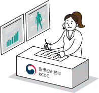

로그인 | 회원가입 |
마이페이지
| 고객센터
인기키워드
1. 코로나 19
2. 메르스
3. 자가격리
4. 코로나19예방수칙
5. 손씻기
6. 대응지침
7. 마스크
8. 포스터
9. 방역
10. 사회적거리두기
감염병
건강정보
정책정보
연구개발
알림·자료
민원·정보공개
기관소개
사업별홈페이지
> 연구개발 > 연구개발 >
질병연구
질병연구
조회 61,390

감염병과 만성병의 기전과 예방·치료·관리에 관한 연구와 환경과 유전 요인에 대한 분석연구를 바탕으로 국민 건강을 지킬 과학적 근거와 수단을 마련합니다.
또한, 국가 보건의료 연구 인프라를 구축·운영을 통해 연구자원과 정보를 제공하여 질병극복과 보건의료의 발전의 기반을 마련하고 있습니다.
감염병연구 >
만성질환 >
유전체연구 >
한국인유전체역학조사사업 >
생명정보연구 >